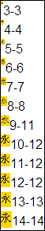
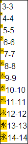
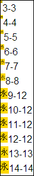
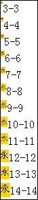
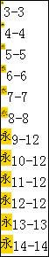

根据 CSS2.1 规范中的描述，'font-size' 特性指定了文字的方块尺寸，其值与 em 单位一致。某些情况下的文字可能会溢出其所指定的方块区域。
规范中提到，'font-size' 特性的值不能是负数值。
关于 'font-size' 特性的更多信息，请参考 CSS2.1 规范 15.7 Font size: the 'font-size' property 中的内容。
IE 中若中文字符的 'font-family' 特性设定的字体为某些英文字体，则在比 12px 小的字号下，中文字符最终使用的字号可能与设定的 'font-size' 特性的字号不符；Opera 中也有类似的情况。
若针对中文字符使用了小于 12px 的字号，则中文字符实际使用的字号在各浏览器中将会产生差异。
| IE6 IE7 IE8(Q) | |
|---|---|
| IE8(S) | |
| Opera |
Chrome Safari Opera 中均有最小字号限制，本文为了测试，调整了 Safari Opera 的相关选项，Chrome 的浏览器语言改为“英语”。
根据问题描述，构建如下测试代码：
<!DOCTYPE html> <html> <head> <meta charset="gbk" /> <script> function
$(id) { return document.getElementById(id); } </script> </head> <body> <div
style="float:left; border:1px solid black; font-family:'Arial'; line-height:1.5;"> <script> for
(var i = 3; i < 15; i++) { document.write('<div style="overflow:hidden; zoom:1;"><span
style="float:left;background:gold;font-size:' + i + 'px"><span id="d' + i +
'">永</span></span>\ <span id="e' + i + '"
style="float:left;"></span></div>'); $("e" + i).innerHTML = i + "-" + $("d" +
i).offsetWidth; } </script> </div> </body> </html>
上述代码中，'font-family' 特性值为 'Arial'，为英文字体，所以若遇到中文字符，则浏览器会启用各自的默认字体渲染中文。代码动态生成了若干“永”字，'font-size' 特性的值由 3px 至 14px 依次递增。通过脚本检测每一个“永”字所在 SPAN 元素的 offsetWidth。
这段代码在各浏览器中运行效果为：
| IE6 IE7 IE8 | Firefox Chrome Safari | Opera |
|---|---|---|
| 1 |  |  |
根据截图可知，
注 1: IE 中当 'font-family' 中指定的英文字体不同时，这个最终使用值也会不同。
下面查看 'font-family' 特性设定中文字体时：
<!DOCTYPE html> <html> <head> <meta charset="gbk" /> <script> function
$(id) { return document.getElementById(id); } </script> </head> <body> <div
style="float:left; border:1px solid black; font-family:'宋体'; line-height:1.5;"> <script> for
(var i = 3; i < 15; i++) { document.write('<div style="overflow:hidden; zoom:1;"><span
style="float:left;background:gold;font-size:' + i + 'px"><span id="m' + i +
'">永</span></span>\ <span id="n' + i + '"
style="float:left;"></span></div>'); $("n" + i).innerHTML = i + "-" + $("m" +
i).offsetWidth; } </script> </div> </body> </html>
这段代码在各浏览器中运行效果为：
| IE6 IE7 IE8 Firefox Chrome Safari | Opera |
|---|---|
|  |  |
根据截图可知，
由于中文字符的特殊性，其在 12px 以下的字号时，阅读将会变得非常困难，浏览器为了保持可读性，可能针对中文字符采取了某种做法以保证其在 12px 以下字号时仍然清晰可读。可以看到 IE Opera 均不约而同的选择了对 'font-size' 为 9px 至 11px 时的中文字符的字号进行修正。除此之外，Chrome 当浏览器语言选择为“中文”是，直接限制了最小字号为 12px，也是为了保证中文字符的可读性。
针对包含中文字符的页面，应避免为中文字符设定小于 12px 的字号，这既是保证了中文字符的可读性，也解决了各浏览器针对这个问题所产生的差异。
| 操作系统版本: | Windows 7 Ultimate build 7600 |
|---|---|
| 浏览器版本: |
IE6
IE7 IE8 Firefox 3.6.10 Chrome 7.0.517.8 dev (英文版) Safari 5.0.2 Opera 10.62 |
| 测试页面: | fontsize.html |
| 本文更新时间: | 2010-09-20 |
font-size 字号 chinese 中文